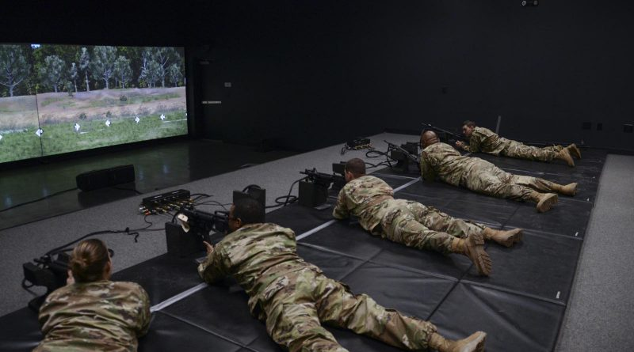

Apprendre: jeux vidéos ou instructeur ?
On le sait tous, les mesures se succèdent pour faire évoluer l’apprentissage, que ce soit dans l’enseignement ou dans les entreprises. Et si la solution se trouvait dans les Serious Game ?
Les Serious Game sont des jeux avec un objectif pédagogique. Ils ont été créés dans le but d’apprendre tout en s’amusant. Selon Julian Alvarez, professeur en université, le serious game est une : « Application informatique, dont l’objectif est
de combiner [...], l’enseignement, l’apprentissage, avec des ressorts ludiques issus du jeu vidéo ». Les serious Game peuvent se décliner sous différentes formes, comme par exemple, une mise en situation dans une entreprise, la gestion d’une
ville...
Nous pouvons distinguer quatre grands types d’utilisateurs des Serious game : les services médicaux, l’armée, les entreprises, les écoles à la première personne multijoueur, il possède quand même des vertus pédagogiques. La première est de donner
une bonne image de l’armée Américaine (propagande ). Il permet également permet d’apprendre les valeurs de l’armée : la défense de son pays, le courage, le respect des ordres et enfin la coopération. Une autre vertu est de pouvoir recruter
plus facilement des jeunes adultes qui ont l’habitude de jouer à ce genre de jeux vidéo. Aujourd’hui, la somme allouée dans la création de ces jeux représente près de 33 millions de dollars.
Les services médicaux
Les Serious Game sont très souvent utilisés en maison de retraites. Ils permettent aux personnes du troisième âge d’entretenir leurs capacités motrices, mentales et mémorielles. En effet, ils sollicitent de nombreuses aires du cerveaux, telles
que les aires somato-sensorielles, auditives, visuelles et bien d’autres.
Ils figurent parmi les mesures non médicamenteuses au bénéfice des personnes âgées, et sont un bon moyen de lutter contre l’isolement de cette catégorie d’âge.
Il est clair que les Serious Game ne sont pas le remède miracle à tous les maux des aînés, mais ils peuvent contribuer à leur bien-être.
L’armée
L’armée est le premier acteur à avoir vu le potentiel derrière les Serious Game et va très rapidement investir dans ce domaine. Un des exemples les plus importants est la création d’un jeu vidéo par l’US Army en 2002. Même ce type de jeu ne
semble pas s’apparenter à un Serious Game étant donné que c’est un jeu de tir à la première personne multijoueur, il possède quand même des vertus pédagogiques. La première est de donner une bonne image de l’armée Américaine (propagande
). Il permet également permet d’apprendre les valeurs de l’armée : la défense de son pays, le courage, le respect des ordres et enfin la coopération. Une autre vertu est de pouvoir recruter plus facilement des jeunes adultes qui ont l’habitude
de jouer à ce genre de jeux vidéo. Aujourd’hui, la somme allouée dans la création de ces jeux représente près de 33 millions de dollars.

Avec l’évolution technique des jeux vidéo, il a été possible de faire des jeux plus complexes et réaliste. C’est à partir de ce moment que certaines armées ont décidé de développer des Serious Game pour apprendre aux soldats à être capable
de tirer sur des personnes lors de situations réalistes. Un autre avantage de ce type de jeu est de permettre également à moindre coût de recréer des situations réalistes. L’un des plus connus s’appelle VBS3, cela fait plus de 15 ans qu’il
est en développement et il permet d’entraîner des militaires dans plus de 50 pays.
Ceci est la preuve de l’efficacité des Serious Game.
Les entreprises
Les Serious Games s'implantent également de plus en plus dans les entreprises. En effet, certaines utilisent ces jeux dans le but de former leurs employés. Parmi elles, on retrouve Sogeti ou encore le CAC 40 : Cotation Assistée en Continu.
Il s’agit du regroupement des 40 entreprises les plus puissantes de France telles que Bouygues.
Les raisons de leur utilisation peuvent être bien plus diverses : notamment le fait que les formations, ayant un coût de plus en plus élevé, peuvent être remplacé par les Serious Game. Ce sont donc une solution idéale pour les entreprises.
Pour certains employés cette méthode d'apprentissage est même plus efficace qu’un instructeur quelconque. En effet, les jeux sont un moyen pédagogique et ludique d’apprendre les enjeux des firmes notamment car ils se basent généralement sur
un système de récompense, qui motive fortement.
De plus les entreprises développent aussi des savoirs-être. En effet, certaines entreprises telles que Air France, Renault ou encore Sogeti vont encore plus loin, en utilisant les Serious Games pour recruter. Ils mettent leurs futurs employés
à l’épreuve en les mettant en situation à travers le jeu. Les points obtenus en jouant peuvent devenir un facteur pour le recrutement car les Serious Game font appel à l'intelligence du joueur, sa capacité à surmonter les échecs ou encore
la capacité à s’intégrer au sein de l'entreprise.
Malgré tout, les entreprises comme « My Serious Game » doivent faire face à quelques problèmes, car même si beaucoup d’entreprises connues utilisent les Serious Games, l’image de l’apprentissage par les jeux est encore majoritairement péjorative
pour les chefs d’entreprises des autres firmes, ce qui impose une certaine limite aux Serious Games.
Une aide pédagogique dans les écoles
Les Serious Games sont également présent dans l’éducation de la maternelle jusqu’au lycée. Cependant, ils sont peu employés par les instituteurs. Certains professeurs les utilisent comme support dans leur matière. Selon eux, cela permet aux
élèves de mémoriser plus facilement, de mieux capter leur attention et de favoriser leur autonomie. De plus, les Serious Game leur enseignent de nombreux savoir-être, tels que les gestes écocitoyens et l’esprit d’équipe.
Néanmoins, bien que réputés pour aider dans l’apprentissage, ces jeux sont source de désaccord concernant leur efficacité et utilité. Leurs limites représentent une barrière qui empêche la diffusion de cette pratique en soutien. La plus courante
est la limite financière, car chaque licence de jeu doit être achetée pour chaque poste informatique utilisé, donc peu de jeux sont à disposition de l’équipe enseignante.
En conclusion, les Serious Game sont utilisés comme méthode de soutien dans l’apprentissage. Ils n’ont pas vocation à remplacer les instituteurs ou formateurs totalement, mais de les aider, en tant que compléments de leçons. Ils sont ainsi
utilisés dans divers secteurs, pour des buts plus ou moins différents les uns des autres, mais leur finalité reste la même : enseigner des savoir-faire et savoir-être de façon ludique.